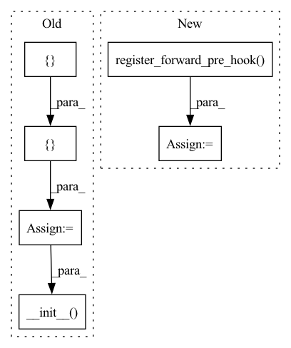

Pattern ID :18541
Before Change
**kwargs
):
expected_inputs = [
{ "type": "torch.Tensor", "dim_count": [2, 3]} ,
{"type": "torch.Tensor", "dim_count": [1]}super().__init__( expected_inputs, hook, **kwargs)
def forward(self, clean_waveform, clean_length):
Input: - clean_waveform (type: torch.tensor, mandatory):After Change
// Remove this hook after it runs once
self.hook.remove()
self.hook = self.register_forward_pre_hook( hook)
def forward(self, clean_waveform, clean_length):
Args:In pattern: SUPERPATTERN
Frequency: 6
Non-data size: 6
Instances Fragment ID: 60495451
Project Name: speechbrain/speechbrain
Commit Name: 2b05a92ddcf0e3f14899ca277fff07b466627d19
Time: 2020-03-26
Author: plantinga.peter@gmail.com
File Name: speechbrain/processing/speech_augmentation.py
M Class Name: add_noise
N Class Name: add_noise
M Method Name: __init__(10)
N Method Name: __init__(9)
M Parent Class: torch.nn.Module
N Parent Class: SpeechBrainModule
M File Name: speechbrain/processing/speech_augmentation.py
N File Name: speechbrain/processing/speech_augmentation.py
M Start Line: 388
M End Line: 423
N Start Line: 84
N End Line: 120
Before Change
**kwargs
):
// Expected inputs when calling the class (no inputs in this case)
expected_inputs = [{ "type": "torch.Tensor", "dim_count": [2, 3, 4]} ]
def hook(self, input):
self.kernel = self.kernel.repeat(input[0].shape[-2], 1, 1)
super().__init__( expected_inputs, hook, **kwargs)
self.der_win_length = der_win_length
// Additional parametersAfter Change
self.kernel = self.kernel.repeat(input[0].shape[-2], 1, 1)
self.hook.remove()
self.hook = self.register_forward_pre_hook( hook)
// Additional parameters
self.n = (self.der_win_length - 1) // 2
self.denom = self.n * (self.n + 1) * (2 * self.n + 1) / 3 Fragment ID: 60495467
Project Name: speechbrain/speechbrain
Commit Name: 7d00e5ec3034142a20ceb7b2aa48d81ad465d20e
Time: 2020-03-27
Author: plantinga.peter@gmail.com
File Name: speechbrain/processing/features.py
M Class Name: deltas
N Class Name: deltas
M Method Name: __init__(2)
N Method Name: __init__(2)
M Parent Class: torch.nn.Module
N Parent Class: SpeechBrainModule
M File Name: speechbrain/processing/features.py
N File Name: speechbrain/processing/features.py
M Start Line: 1089
M End Line: 1105
N Start Line: 1072
N End Line: 1079
Before Change
**kwargs
):
// Definition of the expected input
expected_inputs = [
{"type": "torch.Tensor"},
{ "type": "torch.Tensor"} ,
{"type": "list"}super().__init__( expected_inputs, hook, **kwargs)
def forward(self, prediction, target, lengths):
Input: - prediction (type: torch.Tensor, mandatory)After Change
self.hook.remove()
self.hook = self.register_forward_pre_hook( hook)
def forward(self, prediction, target, lengths):
Input: - prediction (type: torch.Tensor, mandatory) Fragment ID: 60495450
Project Name: speechbrain/speechbrain
Commit Name: 7d00e5ec3034142a20ceb7b2aa48d81ad465d20e
Time: 2020-03-27
Author: plantinga.peter@gmail.com
File Name: speechbrain/nnet/losses.py
M Class Name: compute_cost
N Class Name: compute_cost
M Method Name: __init__(4)
N Method Name: __init__(4)
M Parent Class: nn.Module
N Parent Class: SpeechBrainModule
M File Name: speechbrain/nnet/losses.py
N File Name: speechbrain/nnet/losses.py
M Start Line: 123
M End Line: 164
N Start Line: 64
N End Line: 102
Before Change
// if global_config is not None:
// recovery(self)
expected_inputs = [ { "type": "list"} ]
super().__init__( expected_inputs, hook, **kwargs)
if self.global_config is not None:
self.output_folder = self.global_config["output_folder"]
After Change
self.hook.remove()
self.hook = self.register_forward_pre_hook( hook)
def forward(self, input_lst):
Input (call): - inp_lst(type, list, mandatory): Fragment ID: 60495466
Project Name: speechbrain/speechbrain
Commit Name: 17490396e02fa1dcfa488d6db9a75a290e0980b1
Time: 2020-03-24
Author: plantinga.peter@gmail.com
File Name: speechbrain/nnet/optimizers.py
M Class Name: optimize
N Class Name: optimize
M Method Name: __init__(17)
N Method Name: __init__(17)
M Parent Class: torch.nn.Module
N Parent Class: SpeechBrainModule
M File Name: speechbrain/nnet/optimizers.py
N File Name: speechbrain/nnet/optimizers.py
M Start Line: 193
M End Line: 306
N Start Line: 179
N End Line: 303
Before Change
**kwargs
):
// Definition of the expected input
expected_inputs = [ { "type": "torch.Tensor", "dim_count": [2, 3, 4, 5]} ]
self.n_neurons = n_neurons
self.bias = bias
self.initialize_with = initialize_from
self.recovery = do_recovery
def hook(self, input):
// Computing the dimensionality of the input
fea_dim = input[0].shape[1]
// Initialization of the parameters
self.w = nn.Linear(fea_dim, self.n_neurons, bias=self.bias)
// Managing initialization with an external model
// (useful for pre-training)
initialize_with(self)
// Automatic recovery (when needed)
// recovery(self)
super().__init__( expected_inputs, hook, **kwargs)
// Output folder (useful for parameter saving)
if self.global_config is not None:
self.output_folder = self.global_config["output_folder"]After Change
self.hook.remove()
self.hook = self.register_forward_pre_hook( hook)
def forward(self, x):
Args: Fragment ID: 60495455
Project Name: speechbrain/speechbrain
Commit Name: 7d00e5ec3034142a20ceb7b2aa48d81ad465d20e
Time: 2020-03-27
Author: plantinga.peter@gmail.com
File Name: speechbrain/nnet/architectures.py
M Class Name: linear
N Class Name: linear
M Method Name: __init__(6)
N Method Name: __init__(5)
M Parent Class: torch.nn.Module
N Parent Class: SpeechBrainModule
M File Name: speechbrain/nnet/architectures.py
N File Name: speechbrain/nnet/architectures.py
M Start Line: 70
M End Line: 98
N Start Line: 68
N End Line: 93
Before Change
self.recovery = do_recovery
// Definition of the expected input
expected_inputs = [{ "type": "torch.Tensor", "dim_count": [3, 4, 5]} ]
def hook(self, input):
if len(input[0].shape) > 3:
self.reshape = True
// Computing the feature dimensionality
self.fea_dim = torch.prod(torch.tensor(input[0].shape[1:-1]))
// Vanilla RNN
if self.rnn_type == "rnn":
self.rnn = torch.nn.RNN(
input_size=self.fea_dim,
hidden_size=self.n_neurons,
nonlinearity=self.nonlinearity,
num_layers=self.num_layers,
bias=self.bias,
dropout=self.dropout,
bidirectional=self.bidirectional,
)
// Vanilla LSTM
if self.rnn_type == "lstm":
self.rnn = torch.nn.LSTM(
input_size=self.fea_dim,
hidden_size=self.n_neurons,
num_layers=self.num_layers,
bias=self.bias,
dropout=self.dropout,
bidirectional=self.bidirectional,
)
// Vanilla GRU
if self.rnn_type == "gru":
self.rnn = torch.nn.GRU(
input_size=self.fea_dim,
hidden_size=self.n_neurons,
num_layers=self.num_layers,
bias=self.bias,
dropout=self.dropout,
bidirectional=self.bidirectional,
)
// Vanilla light-GRU
if self.rnn_type == "ligru":
self.rnn = liGRU(
input_size=self.fea_dim,
hidden_size=self.n_neurons,
num_layers=self.num_layers,
dropout=self.dropout,
bidirectional=self.bidirectional,
)
// Quasi RNN
if self.rnn_type == "qrnn":
// Check if qrnn (quasi-rnn) library is installed
try:
from torchqrnn import QRNN
except Exception:
err_msg = (
"QRNN is not installed. Please run "
"pip install cupy pynvrtc \
git+https://github.com/salesforce/pytorch-qrnn ."
"Go to https://github.com/salesforce/pytorch-qrnn \
for more info."
)
logger_write(err_msg, logfile=logger)
// Needed to avoid qrnn warnings
import warnings
warnings.filterwarnings("ignore")
self.rnn = QRNN(
input_size=self.fea_dim,
hidden_size=self.n_neurons,
num_layers=self.num_layers,
dropout=self.dropout,
)
// Managing initialization with an external model
// (useful for pre-training)
initialize_with(self)
// Automatic recovery
// recovery(self)
super().__init__( expected_inputs, hook, **kwargs)
if self.global_config is not None:
self.output_folder = self.global_config["output_folder"]
After Change
self.hook.remove()
self.reshape = False
self.hook = self.register_forward_pre_hook( hook)
def forward(self, x):
Input: - x (type: torch.Tensor, mandatory): Fragment ID: 60495452
Project Name: speechbrain/speechbrain
Commit Name: 7d00e5ec3034142a20ceb7b2aa48d81ad465d20e
Time: 2020-03-27
Author: plantinga.peter@gmail.com
File Name: speechbrain/nnet/architectures.py
M Class Name: RNN_basic
N Class Name: RNN_basic
M Method Name: __init__(11)
N Method Name: __init__(9)
M Parent Class: torch.nn.Module
N Parent Class: SpeechBrainModule
M File Name: speechbrain/nnet/architectures.py
N File Name: speechbrain/nnet/architectures.py
M Start Line: 1511
M End Line: 1601
N Start Line: 1467
N End Line: 1553